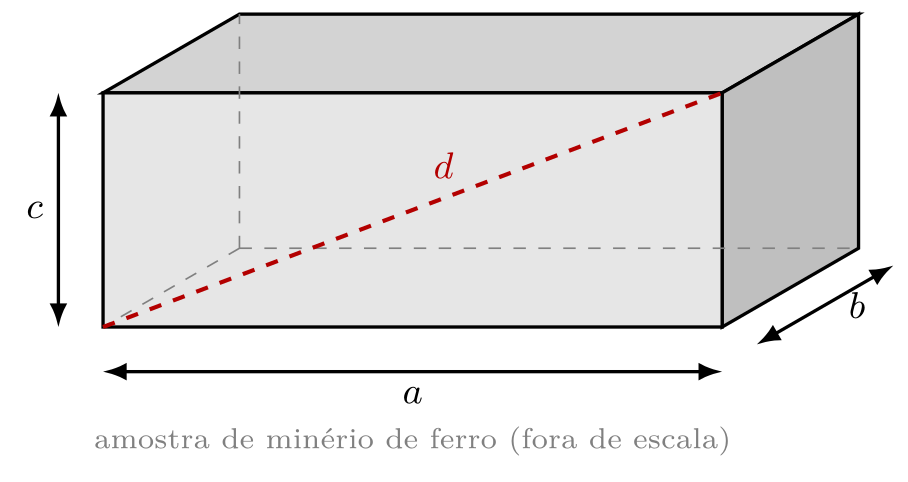

Parte II · Resolução Científica de Problemas de Física Experimental sobre o número π (Questões 1 a 7)
1 · Identificação
Nome:
Registro Acadêmico (RA):
Data: ______/______/_______
A rubrica desta trilha e a desta Folha de Atividades (FA) estão publicadas no site desta disciplina.
Como usar a resolução do professor
Faça antes a sua parte da Folha de Atividades (FA), Parte II: as questões, cada uma com a sua RCP, mesmo que fique incompleta.
Compare a sua resolução com a do professor, um passo da RCP de cada vez. Onde ela se afasta da sua, está o que falta estudar.
Feche o arquivo e refaça a resolução sozinho. Copiar não ensina; refazer, sim.
Abrir a resolução do professor (4 páginas)
1. Dados da Tabela 3
Tabela 5 — círculos 1, 3 e 5 (dados da Tabela 3)
Círculo 1 3 5
D (cm) π usado A (cm²)
2. Dados da Tabela 4
Tabela 6 — círculos 1, 3 e 5 (dados da Tabela 4)
Círculo 1 3 5
D (cm) π usado A (cm²)
RCP · Pensamento Quantitativo
1 · O que a questão quer? 2 · O que eu tenho? 3 · Qual é o desenho? 4 · Minha solução 5 · Confiro e respondo
Introdução ao Laboratório (ILB) · T0E · Folha de Atividades v1 · Parte II ·
IFMG — Campus Ouro Preto · NIDEC/CODAFIS · página 1 de 4
Questão 3 — leia os comprimentos
Escreva cada leitura com o número correto de algarismos
significativos: os corretos e mais um, o duvidoso. Atenção: nem toda peça começa no zero.
RCP · Pensamento Quantitativo
1 · O que a questão quer? 2 · O que eu tenho? 3 · Qual é o desenho? 4 · Minha solução 5 · Confiro e respondo
Questão 4 — o resultado com o número correto de algarismos significativos
Operação Resultado da calculadora
Com o número correto de algarismos significativos
31,46 m + 8,7 m = 40,16 m 52,8 cm − 17,35 cm = 35,45 cm 3,47 m × 1,2 m × 2,068 m = 8,611152 m³ (18,62 m ÷ 4,35 s) × 2,7 s = 11,55724138 m
RCP · Pensamento Quantitativo
1 · O que a questão quer? 2 · O que eu tenho? 3 · Qual é o desenho? 4 · Minha solução 5 · Confiro e respondo
Introdução ao Laboratório (ILB) · T0E · Folha de Atividades v1 · Parte II ·
IFMG — Campus Ouro Preto · NIDEC/CODAFIS · página 2 de 4
Questão 5 — a amostra de minério

(a) A diagonal d da face ac:
(b) A área total das faces:
RCP · Pensamento Quantitativo
1 · O que a questão quer? 2 · O que eu tenho? 3 · Qual é o desenho? 4 · Minha solução 5 · Confiro e respondo
π R² (mm²) A (mm²)
3,14 3,142 3,1416 3,14159 3,141593
Resposta com o número correto de algarismos significativos:
RCP · Pensamento Quantitativo
1 · O que a questão quer? 2 · O que eu tenho? 3 · Qual é o desenho? 4 · Minha solução 5 · Confiro e respondo
Introdução ao Laboratório (ILB) · T0E · Folha de Atividades v1 · Parte II ·
IFMG — Campus Ouro Preto · NIDEC/CODAFIS · página 3 de 4
Questão 7 — quantos algarismos de π?
Com quantos algarismos significativos devemos usar o π para que a área da Questão 6
saia com quatro algarismos significativos, na Física Experimental? Justifique com a sua tabela.
RCP · Pensamento Qualitativo
1 · O que a questão quer? 2 · O que eu tenho? 3 · Como eu separo as afirmações? 4 · Julgo uma por uma 5 · Confiro e respondo
Rubrica desta Trilha de Aprendizagem — a T0E vale ___ no SUAP
Pré-Lab · Folha de Atividades (FA) Lab · Roteiro de Bancada (RB) Pós-Lab · Relatório Mínimo (RM) Pós-Lab · Relatório Completo (RC) Uso de Tecnologias (IA) Total ___ (20 %)___ (40 %)___ (15 %)___ (25 %)___ (20 %) Extra___ (100 %)
Como a Parte II da FA é corrigida (5,0 dos 10,0 pontos da FA; a FA inteira = 20 % desta trilha)
Critério O que se avalia Pontos A área Questões 1 e 2: π com um algarismo a mais que D, anotado como usado; A com os algarismos certos, em cm² 1,5 Leituras e operações Questões 3 e 4: o duvidoso de cada régua, o início da peça e as regras da soma e do produto 2,0 Minério, rolete e π Questões 5 a 7: diagonal e área com 3 algarismos, a tabela do rolete e a justificativa pela tabela 1,5 Total 5,0
IFMG campus Ouro Preto - Coordenadoria da Área de Física (CODAFIS) - Núcleo de Inovação e Desenvolvimento de Experimentos Científicos (NIDEC) · Primeira edição · 2026
Introdução ao Laboratório (ILB) · T0E · Folha de Atividades v1 · Parte II ·
IFMG — Campus Ouro Preto · NIDEC/CODAFIS · página 4 de 4
Site
Método
Música
Etapa 1
Etapa 2
Etapa 3
Documentos
Créditos
Método
Prisma decompondo a luz — Licenciatura em Física
A ordem não é burocracia: ela segue como o cérebro aprende — preparação (pergunta antes da resposta), construção ativa (recuperar em vez de reler) e consolidação (revisão no mesmo dia e revisões espaçadas, com o sono fazendo a parte dele).
Pré-Lab · fazer em casa, antes da aula de bancada
Preparar o experimento antes de tocar no equipamento: chegar à bancada sabendo o que será medido, com qual instrumento e com quais cuidados.
Ponto de Partida (PP) — vale nota · antes do Lab · 10 min Resumo em Áudio (MD) — ouvir · 3 a 5 min Texto Temático (TT) — ler · a prática explicada Folha de Atividades (FA) — praticar · no aparelho ou impressa Simulações (SM) — explorar · simulações Testinho (TN) — vale nota · antes do Lab · 10 min
Materiais de apoio desta parada (sem número no caminho)
Cartões Didáticos (CD) — ler · revisão ativa Mapa Conceitual (MC) — ler · questões conceituais Inventário de Equipamento (IE) — o que vai na bancada Checklist de Segurança (CS) — obrigatório · antes da bancada
Lab · na bancada, com o professor · 100 min
Construir o conhecimento com as mãos: montar, medir e registrar — com o professor sustentando o passo que você ainda não dá sozinho.
Roteiro de Bancada (RB) — execução · registrar os dados Apresentação do Lab (AP) — roteiro dos 100 min · rever depois Infográficos de Bancada (IG) — painel e consultas · durante a prática Provinha (PR) — vale nota · fechamento do Lab
Pós-Lab · a partir do mesmo dia da prática
Transformar dados em conclusão. A memória não se fixa na bancada, e sim depois — em boa parte durante o sono.
Relatório Mínimo (RM) — vale nota · até 1 dia após o Lab · 1 página Relatório Completo (RC) — vale nota · até 6 dias após o Lab
Materiais de apoio desta parada (sem número no caminho)
Desafio Pedagógico (DX) — opcional · desafio
Não pule nenhum objeto de aprendizagem. Se pulou, volte. Cada passo prepara o terreno do seguinte: sem o Ponto de Partida a leitura não encontra pergunta; sem o Pré-Lab a bancada vira receita seguida às cegas; sem o Relatório Mínimo os dados esfriam antes de virar conclusão. Pular um objeto de aprendizagem não adianta a trilha — atrasa. Se você pulou, volte ao passo que ficou para trás e siga dali.
Música
Prisma decompondo a luz — Licenciatura em Física
Por que estudar ouvindo? Miguel Nicolelis responde em O Verdadeiro Criador de Tudo : ciência e arte saem do mesmo lugar — o cérebro humano. E Pierluigi Piazzi, em Aprendendo Inteligência , acrescenta a parte prática: música sem letra não disputa com a leitura as áreas da linguagem. A palavra cantada rouba a palavra lida; a música instrumental sustenta, e some.
Daí a regra do projeto — uma trilha, uma música : ler, medir e registrar ouvindo música instrumental.
O acervo — as oito playlists
1 Baden Powell · T01 · T06 — nos Afro-sambas cabem a bossa, o candomblé e a harmonia de câmara. Somar mundos é o ofício de quem mede: a bancada mede, o caderno deduz, a teoria explica por que importa.
▶ Ouvir a playlist 2 Yamandu Costa · T02 · T07 — improvisa porque conhece a estrutura até o último traste. Improviso não é sorte: é o nome da liberdade de quem estudou.
▶ Ouvir a playlist 3 Orquestra Ouro Preto · T03 · T08 — nasceu no ano 2000, por iniciativa do professor Ronaldo R. B. Toffolo e do compositor Rufo Herrera, e é a casa desta escola: Toffolo foi aluno, professor e diretor-geral da Escola Técnica Federal de Ouro Preto, que hoje é o IFMG campus Ouro Preto. Estudar com ela ao fundo é estudar ouvindo a própria instituição.
▶ Ouvir a playlist 4 Filarmônica de Minas Gerais · T04 · T09 — noventa músicos, um único referencial de tempo, erro na casa dos milissegundos: ordem de grandeza, sincronia, medida.
▶ Ouvir a playlist 5 Marco Antônio Araújo · T05 · T10 — violoncelista da Sinfônica de Minas e compositor que fez o barroco mineiro, a modinha e a seresta caberem no rock progressivo. A obra, interrompida aos 36 anos, ficou inacabada — e é isso que ela ensina a quem mede: nenhum experimento termina; toda medida com incerteza é um convite à medida seguinte.Playlist em preparação
6 J. S. Bach · T0A · T0C — a fuga é a definição de sistema físico: muitas vozes, uma lei só. É a abertura do curso, e por isso não entra no ciclo das dez trilhas de bancada.Playlist em preparação
7 W. A. Mozart · acervo — nada sobra, nada falta. Elegância é saber o que pode ser retirado sem quebrar o todo — no pentagrama e na montagem experimental.Playlist em preparação
8 L. van Beethoven · acervo — de quatro notas, uma sinfonia; de duas ou três letras, uma lei. Muda a escala; a lei, não. E a Nona, composta já na surdez, lembra: o modelo vem antes da medida.Playlist em preparação
Na ILB, cinco playlists giram em duas voltas exatas pelas trilhas T01-T10 — Baden Powell, Yamandu Costa, Orquestra Ouro Preto, Filarmônica de Minas Gerais e Marco Antônio Araújo. As duas trilhas do Tema 0 ficam fora do ciclo, com Bach.
Ampliando o acervo — em preparação
Raphael Rabello (Petrópolis, 1962 — Rio de Janeiro, 1995) — primeiro registro profissional aos treze anos; discípulo de Dino 7 Cordas e parceiro de Radamés Gnattali, levou o violão de sete cordas do acompanhamento ao centro do palco. Morreu aos 32 anos, deixando uma obra relevante e inacabada.
Etapa 2 · Forças, Torques, Resultante e Equilíbrio de Corpos em Repouso
Prisma decompondo a luz — Licenciatura em Física
As trilhas desta etapa, na ordem em que você vai fazê-las.
T01 · Forças: Peso, Elástica, Tração e Empuxo, Compressão (Normal, Atrito) e Aerodinâmica (Sustentação, Arrasto)em preparação
T02 · Resultante das Forças no Equilíbrio Estático de Ponto Materialem preparação
T03 · Máquinas Simples: Plano Inclinado e Poliasem preparação
T04 · Centro de Massa, Torque, Resultante de Forças e Torques no Equilíbrio de Corpo Extensoem preparação
Etapa 3 · Forças, Aceleração, Trabalho, Energia e Potência de Corpos em Movimento
Prisma decompondo a luz — Licenciatura em Física
As trilhas desta etapa, na ordem em que você vai fazê-las.
T05 · Forças e Aceleração: Esfera e Bolha em MRU no Óleo, Carrinho na Rampa e Queda Livreem preparação
T06 · Forças e Aceleração no Movimento Circular Uniformeem preparação
T07 · Formas, Fontes e Transformações da Energia, Potência e Rendimento na Mecânicaem preparação
T08 · Projeto Integrador — Gráficos de Apoio para Aulas e Reuniõesem preparação
Documentos
Prisma decompondo a luz — Licenciatura em Física
Primeiro os documentos do curso, depois os desta disciplina e, por fim, as referências que sustentam este site. Cada documento tem PDF e QR próprios, para ler no celular. A legislação abre na página oficial do IFMG.
Projeto Pedagógico do Curso (PPC) · guia + PDF integral
Matriz Curricular · os oito períodos
Ementa · em vigor e proposta
Plano de Ensino · 2026.2
Regulamento Disciplinar Discente · resumo + PDF oficial
Legislação e Normas de Ensino · página oficial do IFMG
A proposta de nova ementa está em análise pela Coordenação do Curso; até a aprovação, vale a ementa em vigor.
Referências
Referências são as obras em que este site se apoia. A Básica e a Complementar trazem a física do laboratório. A Pedagógica Científica traz o método de estudo. Os documentos e as normas trazem as regras do curso. Elas valem para conferir uma ideia, ir mais fundo ou citar no seu relatório.
Bibliografia Básica
CAMPOS, A. A.; ALVES, E. S.; SPEZIALI, N. L. Física experimental básica na universidade . 2. ed. Belo Horizonte: Editora UFMG, 2008.
PIACENTINI, J. J. et al. Introdução ao laboratório de física . 2. ed. Florianópolis: Editora da UFSC, 2018.
SANTORO, A. et al. Estimativas e erros em experimentos de física . 2. ed. Rio de Janeiro: EdUERJ, 2013.
Bibliografia Complementar
HEWITT, P. G. Física conceitual . 12. ed. Porto Alegre: Bookman, 2015.
FEYNMAN, R. P.; LEIGHTON, R. B.; SANDS, M. L. Feynman: lições de física . Porto Alegre: Bookman, 2008. v. 1, 2 e 3.
HALLIDAY, D.; RESNICK, R.; WALKER, J. Fundamentos de física : mecânica. 10. ed. Rio de Janeiro: LTC, 2016. v. 1.
Bibliografia Pedagógica Científica
BLOOM, Benjamin S. (org.). O desenvolvimento de talentos na juventude . Porto Alegre: Globo, 1988.
HEWITT, Paul G. Física conceitual . 12. ed. Porto Alegre: Bookman, 2015.
NICOLELIS, Miguel. O verdadeiro criador de tudo : como o cérebro humano esculpiu o universo que conhecemos. São Paulo: Planeta, 2020.
PIAZZI, Pierluigi. Aprendendo inteligência : manual de instruções do cérebro para estudantes em geral. São Paulo: Aleph, 2008.
Documentos e normas
INSTITUTO FEDERAL DE MINAS GERAIS. Campus Ouro Preto. Legislação e normas de ensino . Ouro Preto: IFMG, [202-?]. Disponível em: https://ouropreto.ifmg.edu.br/ouropreto/ensino/legislacao-e-normas-de-ensino. Acesso em: 16 set. 2026.
INSTITUTO FEDERAL DE MINAS GERAIS. Campus Ouro Preto. Calendário acadêmico 2026 . Ouro Preto: IFMG, 2026. Disponível em: https://ouropreto.ifmg.edu.br/ouropreto/ensino/calendario-escolar/2026/. Acesso em: 16 set. 2026.
INSTITUTO FEDERAL DE MINAS GERAIS. Campus Ouro Preto. Curso de Licenciatura em Física . Ouro Preto: IFMG, [202-?]. Disponível em: https://ouropreto.ifmg.edu.br/ouropreto/cursos/graduacao/licenciatura-em-fisica. Acesso em: 16 set. 2026.
INSTITUTO FEDERAL DE MINAS GERAIS. Campus Ouro Preto. Projeto Pedagógico do Curso de Licenciatura em Física . Ouro Preto: IFMG, 2026. Disponível em: https://ouropreto.ifmg.edu.br/ouropreto/cursos/graduacao/licenciatura-em-fisica. Acesso em: 16 set. 2026.
Epígrafes desta trilha
FREIRE, Paulo. A importância do ato de ler . São Paulo: Cortez, 1982.
GALILEI, Galileo. Il Saggiatore . Roma, 1623. (usada no Roteiro de Bancada desta trilha)
LEONARDO DA VINCI. Codice Forster III , c. 1493–1496. Londres: Victoria and Albert Museum.
Créditos
Prisma decompondo a luz — Licenciatura em Física
Reitor Rafael Bastos Teixeira
Pró-Reitor de Ensino Mário Luiz Viana Alvarenga
Diretor-Geral do Campus Ouro Preto Reginato Fernandes dos Santos
Diretora de Ensino Talita Valadares
Coordenador da Área de Física Lázaro Souza Lima
Presidente do Colegiado do Curso de Licenciatura em Física Daniel da Mota Neri
Vice-Presidente do Colegiado do Curso de Licenciatura em Física Daniel Bretas Roa
Autor da Trilha
Julio Azevedo
Professor do Ensino Básico, Técnico e Tecnológico do Instituto Federal de Minas Gerais (IFMG), atuando na Área de Física do campus Ouro Preto desde 1985. Criador do Núcleo de Inovação e Desenvolvimento de Experimentos Científicos (NIDEC) em 2016. Ex-aluno do Curso de Engenharia de Minas e do Curso de Física, ambos da Universidade Federal de Ouro Preto (UFOP).
Colaborador
Felipe Beato
Professor, pesquisador, colaborador do Núcleo de Inovação e Desenvolvimento de Experimentos Científicos do IFMG campus Ouro Preto. Licenciado em Física, Mestre em Física dos Materiais.
Edição
1.ª edição — Ouro Preto, 2026